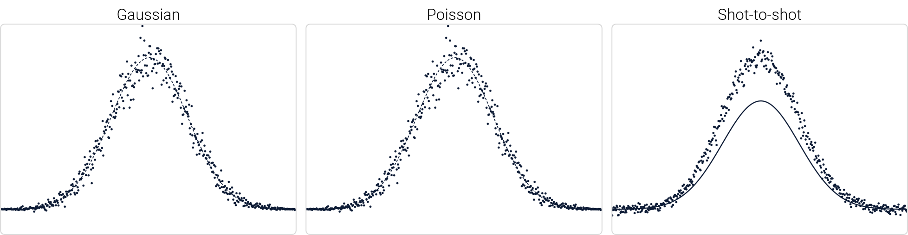

A general error model for optical signals
This model generalizes the Poisson-Gaussian error model to allow for fluctuations between measured signals, as described by Sipkens et al. Originally, the error model was built to describe time-resolved laser-induced incandescence (TiRe-LII) signals but has applications that extend beyond this original scope.
Overall, the model includes contributions from three components, pictured below.
Additive white, Gaussian noise affects the signal more uniformly and is the primary source of noise at lower signals.
Shot or Poisson noise, which is incorporated by "reducing" the signal by θ, will result in lower signals containing smaller fluctuations. Reducing the Gaussian contributions, by lowering γ, one can clearly see this effect. This work approximates this type of noise as Guassian. As a result, when θ is large (such that the peak signal is below 50 counts, e.g., in the shoulder signal for this this set of parameters), artifacts become visible in this approximation. Significant negative counts start to appear and discretized values will not be visible as they would in true Poisson-corrupted data.
Finally, variations in a multiplier between measured signals or shot-to-shot variations allow individual signals to appear above or below the overall average. This is convolved with Poisson noise, such that signals higher than the average will contain more noise (this is vsisibly apparent for this set of parameters).
Visualization
Yellow is a signal two standard deviations below the average, dark purple is a signal two standard deviation above the average, and red is a signal about the average. As a result, changing τ will stretch the bounds.
γ =
max{s} = counts
θ =
τ =